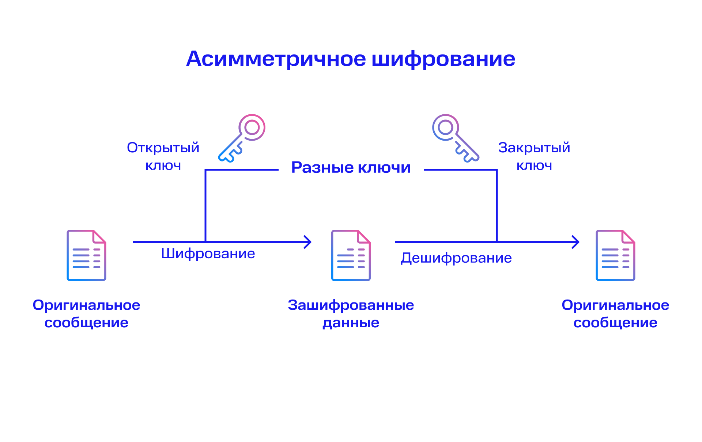
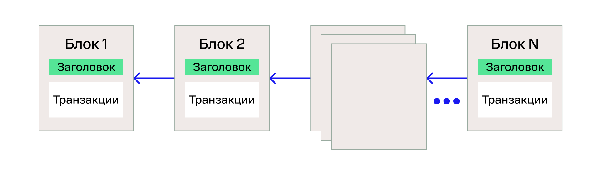
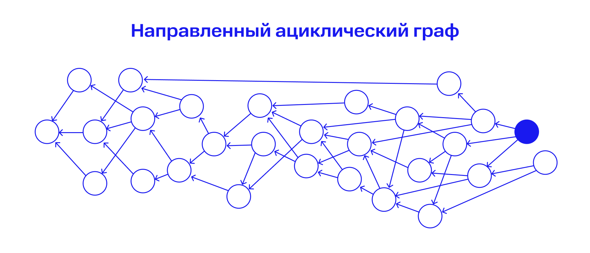

Что такое технология распределенного реестра
Распределенный реестр — это база данных, информация в которой синхронизируется между несколькими сетевыми
узлами или устройствами. В каждом узле хранится копия всей информации реестра.
Технология распределенных реестров (ТРР) появилась, когда получилось соединить в общую конструкцию
отдельные элементы:
- асимметричную криптографию
- распределенные системы и консенсусы в них
- виртуальные машины
Термины
Асимметричная криптография работает так: у пользователя А есть открытый и закрытый ключи. Он отправляет
открытый пользователю Б — теперь тот может зашифровать сообщение. Пользователь А получает сообщение и
расшифровывает его уникальным закрытым ключом.
Распределенные системы — независимые узлы или устройства, которые связаны между собой и образуют общую
информационную систему.
Консенсус — механизм достижения согласования, благодаря которому система продолжит работать в случае аварии.
Информация сохранится, даже если один из узлов откажет.

Принцип работы технологии распределенных реестров
Технология распределенных реестров — это электронная система данных, которые можно хранить и передавать в
реестр разными способами. Самый известный из них — блокчейн, когда вся информация группируется в цепочку блоков.
Этим термином иногда заменяют название всей технологии, потому что такой способ записи используется чаще других.

Другой способ записи — направленный ациклический граф (DAG). Данные сохраняются в том порядке, в котором поступили, и новая запись
имеет связь со старыми.

Распределенные реестры — это таблицы, где хранится информация. Они бывают:
- Открытые
К реестру может присоединиться любой пользователь, проверить записи и сформировать блоки.
По такому принципу работает биткоин.
- Закрытые
К реестру есть доступ у ограниченного числа пользователей. Такие системы используют внутри
одной организации. Например, банк может объединить данные из своих филиалов в закрытом реестре.
- Консорциумные
Подтверждать информацию могут пользователи из состава определенной группы компаний или ассоциации.
Реестр можно использовать, чтобы объединить базу данных для нескольких независимых компаний.
Преимущества распределенных реестров